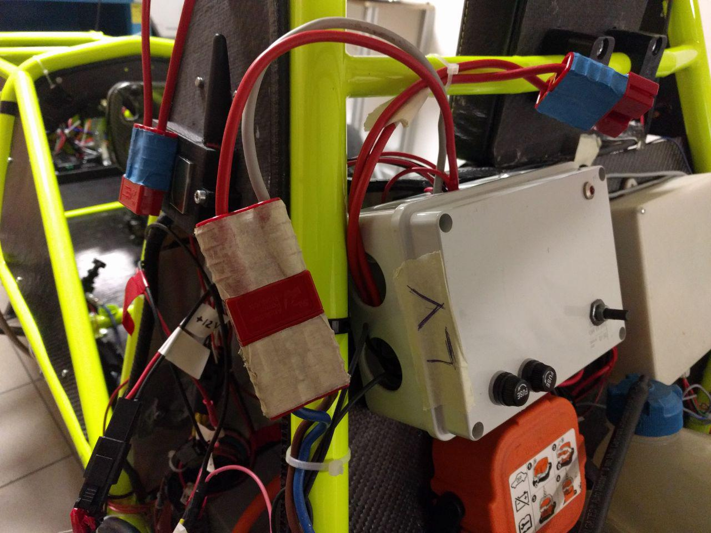
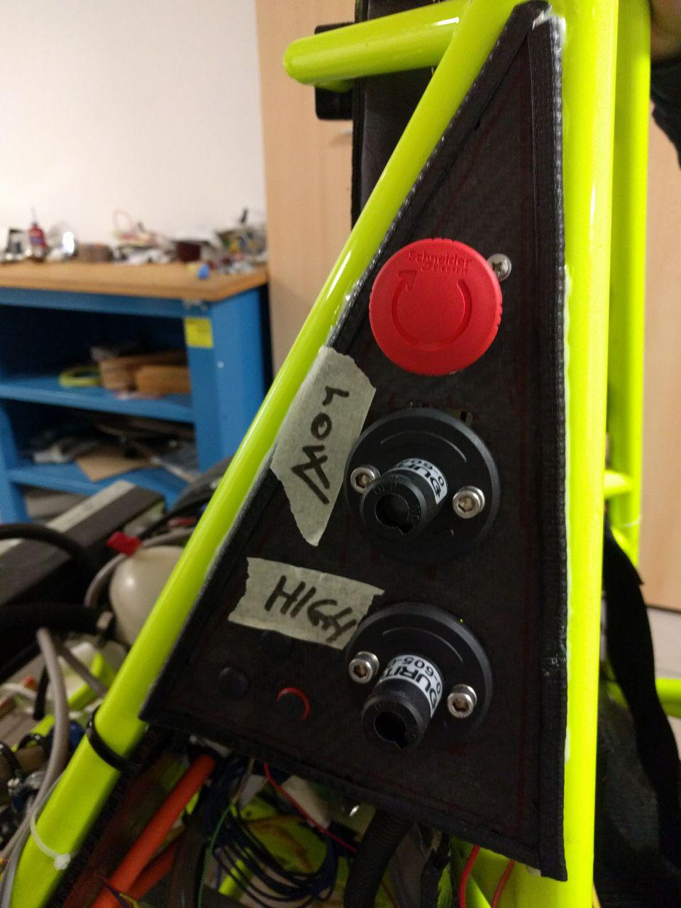

Eagle Steering Wheel¶
Collegamento al Volante via SSH¶
Per connettersi al volate è necessario che questo sia acceso (si può testarlo in macchina oppure attaccandolo all’alimentatore da banco.)
Per accenderlo basterà attacare il Molex segnato con lo scotch bianco, in questo modo il pacco Low Voltage sarà collegato.
Ora bisogna accendere effettivamente la macchina con la chiave. Sul lato destro sono presenti tre interruttori:
Quello che interessa a noi è il secondo, ora la macchina sarà accesa
Una volta acceso e completata la procedura di boot, il volante crea una rete Wireless chiamata Pi_AP. Bisogna connettersi ad essa (la password è raspberry), quindi aprire un terminale e digitare il seguente comando:
ssh pi@raspberrypi.local
Il prompt vi richiederà la password di pi@raspberrypi.local: la password è raspberry
Una volta collegati al volante, per far iniziare il programma è necessario digitare questo comando:
./EagleSteeringWheel
Per riavviare il programma è sufficiente premere <Ctrl-C>
Effettuare modifiche al codice e fare il deploy dell’eseguibile¶
Se si desiderano effettuare modifiche al codice (sia alla parte C++ che a quella QML) e vederle applicate sul volante è sufficiente utilzzare gli script rasp_deploy.sh e deploy.sh entrambi presenti nella cartella Volante.
Il primo inizialmente monta la cartella contente il filesystem presente sul raspberry in una cartella di sistema (qualora non fosse ancora stata montata), successivamente compila il programma per Raspberry (in caso ci fossero file modificati rispetto alla versione già compilata) e lo invia tramite scp (SSH COPY) al volante collegato wireless.
Se l’output finale fosse qualcosa di simile a ”./EagleSteeringWheel: file busy”, significa che il programma è ancora in esecuzione sul Raspberry. In questo caso è sufficiente chiudere il programma sul Raspberry e far girare nuovamente lo script rasp_deploy.sh
sudo killall Eaglestee(tab)
Oppure, con top, trovaimo il pid del processo e killiamo il processo. P.S. (tab) per autocompletamento
kill -9 pid
Comando per compilare & deploy (su terminale):
./rasp_deploy.sh
Ora dobbiamo far partire il programma con:
sudo ./Eaglestee(tab)
Dalla cartella locale Volante mandare lo script e inserire raspberry, se è vuoa inserire la password sudo personale.
sudo ./raspberry
Il secondo (deploy.sh) serve per far partire il simulatore del volante sul PC locale. Questo script compila un progetto diverso che integra i file necessari per emulare i tasti e la seriale che si trovano sul volante quando è collegato in macchina. Lo scopo di questo simulatore è di testare il codice in locale, velocemente e con maggiore controllo di quello che sta accandendo e di verificarne il reale funzionamento in macchina in una seconda fase.
Questo script crea una seriale virtuale con socat e due symlink (ttyV0 e ttyV1) che servono come endpoint per scrivere e leggere sulla seriale. Lo script fa partire sia il simulatore del volante che il simulatore della centralina, che risponde opportunamente agli input del volante.
Comando per compilare & deploy (su terminale):
./deploy.sh
Warning
IMPORTANTE CREARE UNA CARTELLA BUILD NELLA DIRECTORY CORRENTE